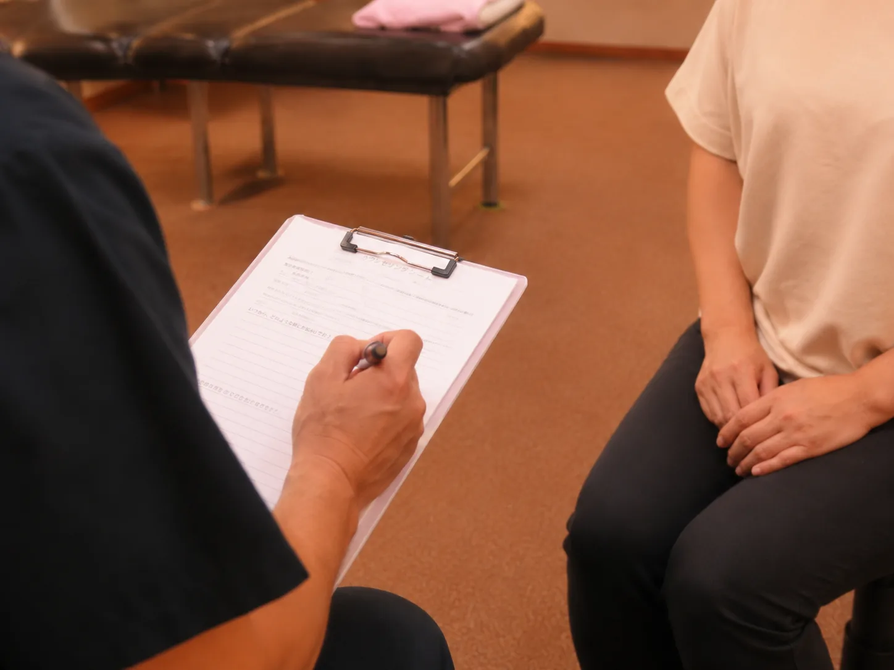
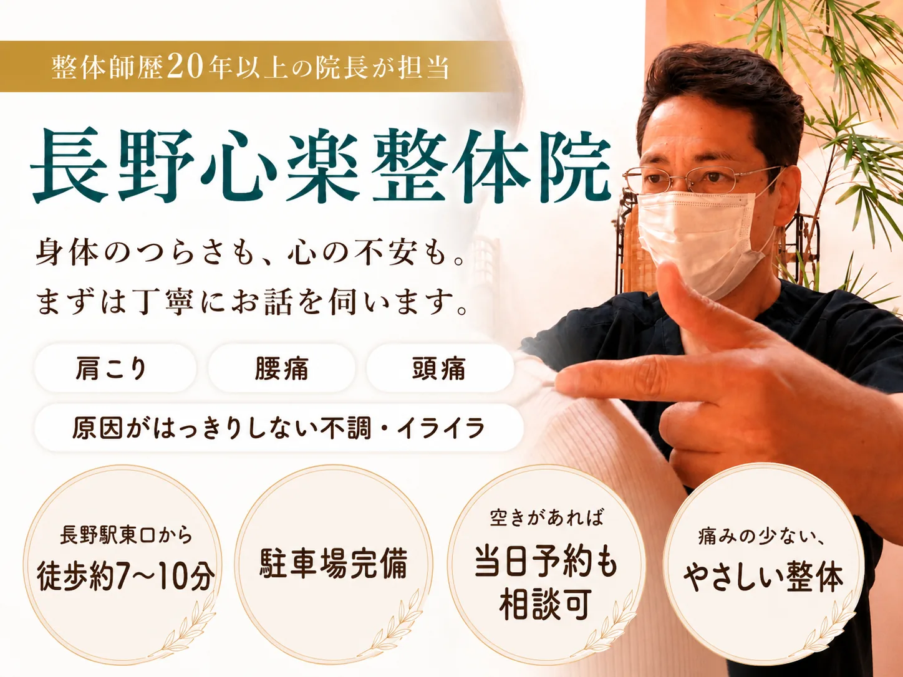
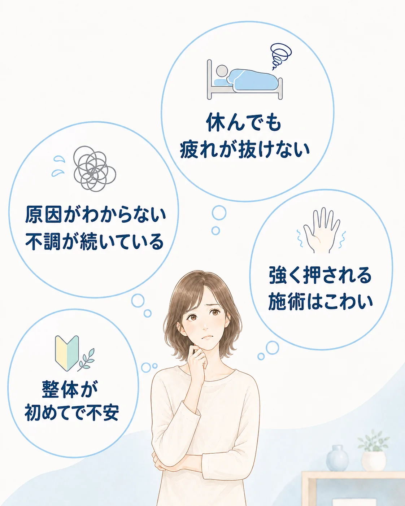
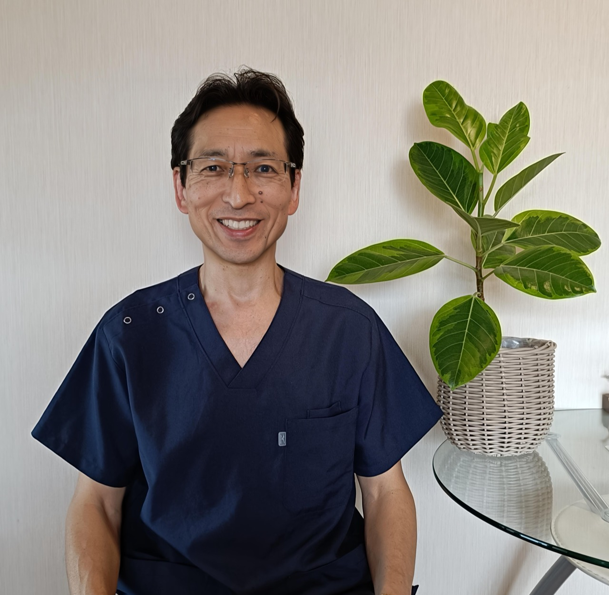
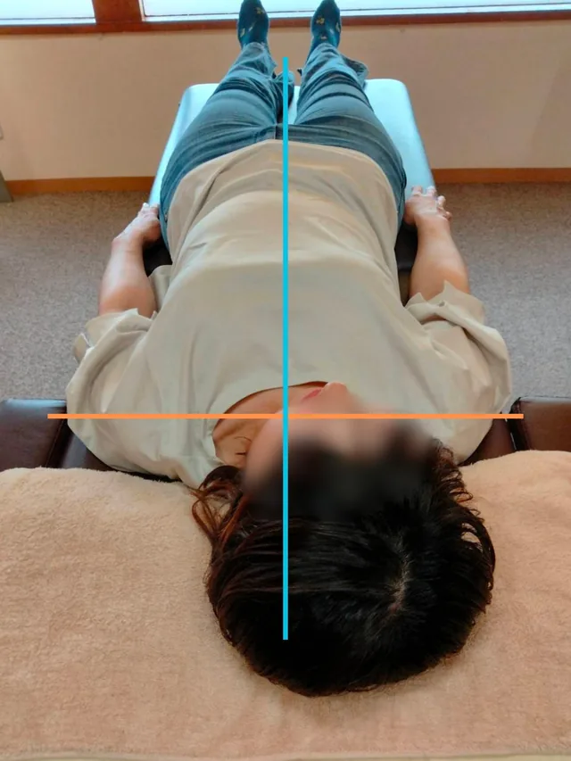
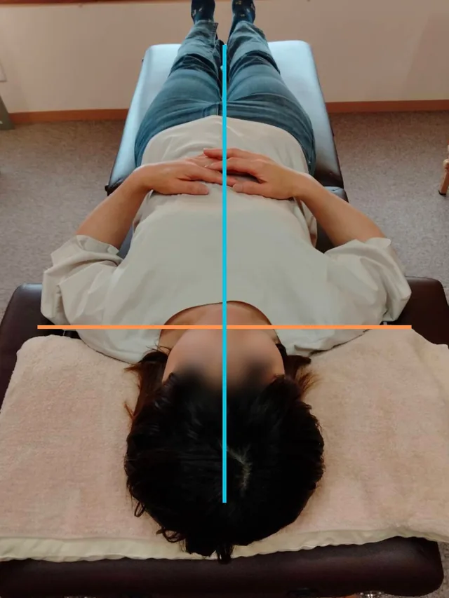
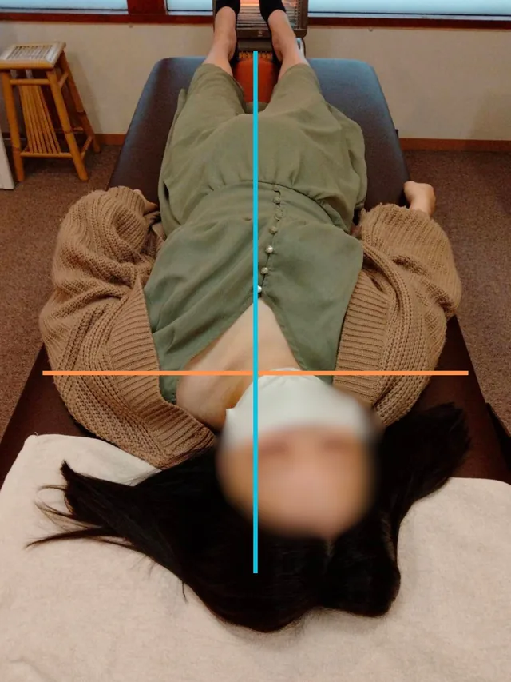
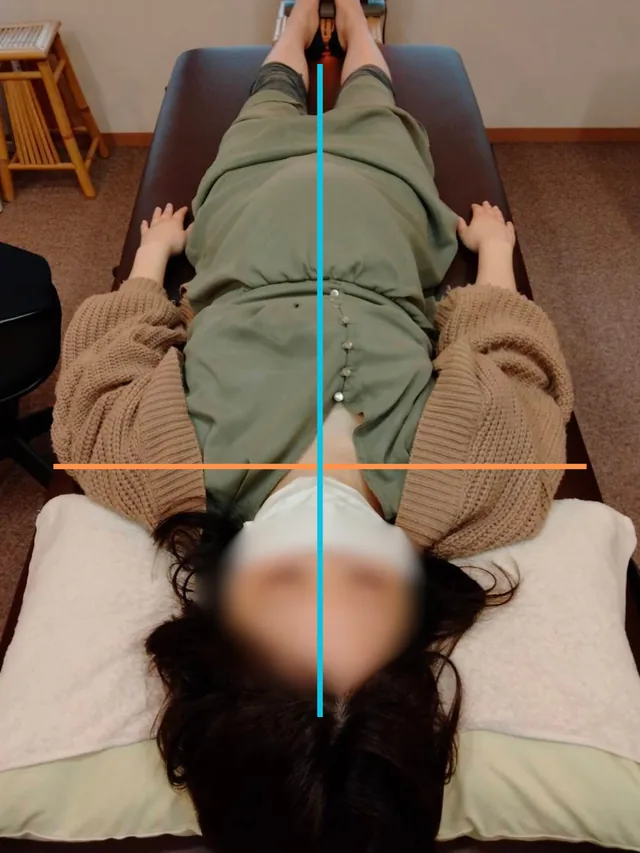
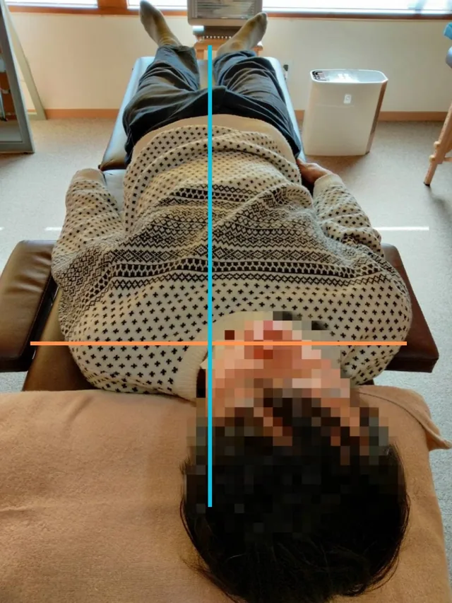
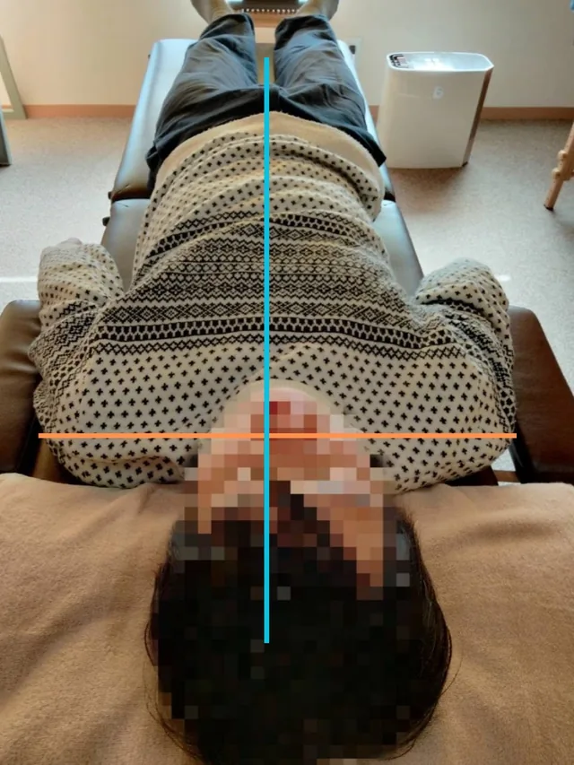

施術前にしっかりとお話を伺います
現在の体調や困っていること、施術への不安をカウンセリングで確認します。気になることがあれば、遠慮なくお話しください。

長野駅東口から徒歩7〜10分。
院長がカウンセリングから施術、施術後の説明まで一人で担当します。

ひとつでも当てはまる方は、
お気軽にご相談ください。
初めての整体では、「何をされるのだろう」「強くされないだろうか」と不安を感じる方もいます。
当院ではまずはお話をしっかり聞くこと、お体の状態を確認すること、説明しながら進めることを大切にしています。

現在の体調や困っていること、施術への不安をカウンセリングで確認します。気になることがあれば、遠慮なくお話しください。

痛みの少ない、体にやさしい施術を心がけています。身体の状態や感じ方を確認しながら、無理のない範囲で進めます。

予約からカウンセリング、施術まで院長が担当します。担当者が変わることなく、前回までのお話も踏まえて対応します。

院長紹介
島田 俊明院長／整体師歴20年以上
カウンセリングから施術まで、院長が一人で丁寧に対応します。毎回同じ担当者だからこそ、前回までのお話やお身体の状態もふまえて進められます。
「ご縁のあった皆様に、 心も体も軽くなって、毎日を もっと楽しんでいただきたい。」
その想いを大切に、一人ひとりのお話を伺っています。
院長挨拶と院名に込めた想いを読む一度の施術でも「え、こんなに？」と驚かれるほど変化を感じていただけています。


40代・女性のお客様
右に傾いていた体軸が中心に戻り、バランスが整いました。


20代・女性のお客様
首の右側の緊張から、大きく歪みが出ていましたが、施術後は体の中心線がまっすぐに。


50代・男性のお客様
骨盤から大きく右にずれていましたが、
施術後は自然と中心に整っています。
写真は一例です。感じ方や変化には個人差があります。
ご新規様
カウンセリング込み

アクセス
長野心楽整体院
〒380-0935 長野県長野市中御所2-24-15
はい。どなたでも無料で相談できます。営業時間内にお電話ください。施術中などで応答できない場合があります。
男性の院長が一人で担当します。ベッド1台の完全予約制です。
力まかせに押したり、無理に動かしたりする施術ではありません。身体の状態や感じ方を確認しながら進めますので、不安がある場合は遠慮なくお伝えください。
動きやすい服装でお越しください。持ち物として、フェイスタオルを1枚お持ちください。
年齢や妊娠の有無にかかわらず、まずはご相談いただけます。施術前に状態を確認し、当院での施術が適切でないと判断した場合は、施術を行わず医療機関への相談をご案内することがあります。
状態に応じた通院の目安をお伝えすることはありますが、無理に通院を勧めることはありません。ご希望やご都合を確認しながら、相談して決めます。
初めのうちは、週1回程度を6回前後の目安としてご案内する場合があります。ただし、必要な回数や間隔には個人差があります。現在の状態とご希望を確認しながら相談して決めます。